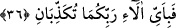

34. Öyleyse Rabbinizin hangi nimetlerini yalanlayabilirsiniz?
Cezâlandırmaya tam ve kâmil mânâda gücü yettiği halde uyarması, sakındırması,
kolaylaştırıp afvetmesi O’nun nimetlerindendir.
35. Üzerinize ateşten alev ve duman gönderilir de birbirinizi kurtaramaz ve
yardımlaşamazsınız.
Yâni, siz her iki topluluk bu azabı önliyemezsiniz. Kamus’ta da ifâde edildiği gibi
âyetteki “şuvâz”, dumanı olmayan yalın alev veya ateşin dumanı ile yakıcılığı demektir.
Sa’dî Müftî demiştir ki; -Allah daha iyi bilir- bu âyet-i kerîme mahşere
götürdüklerinde, “kaçıp kurtulacak yer yok mu?” diye feryad edip çağıranın sorusuna
müstakil bir cevaptır. Nitekim, İbn Abbâs (r.a.)’den rivâyet edildiğine göre mânâ
şöyledir: “İnsan ve cin topluluğu, sizi mahşere götürmek için üzerinize dumansız yalın
alev hâlinde ateş gönderilir.”
“Nühas”, duman veya başlarına dökülen eritilmiş bakır demektir. Müfredat’da,
Nühas, dumansız yalın alev olup renk itibariyle bakır’a bir benzetmedir, denmiştir.
Kamus’ta Ebû Abbâs el-Kevâşî’den naklen, Nühas, bakır, ateş ve kızdırılmış demir
veya kıvılcım üçlüsünden oluşan bir maddedir denmiştir.
36. Öyleyken Rabbinizin hangi nimetlerini yalanlayabilirsiniz?
Küfrün ve isyanın sonucunu açıklamak ve onlardan sakındırmak O’nun lütuf ve
nimetlerindendir. Hem de büyük bir nimet ve lütuftur.
37. Gök yarılıp da kızarmış yağ renginde gül gibi olduğu zaman,
Yâni kıyâmet koptuğu için o günde gök birbirinden kopup ayrıldı veya meleklerin
inmeleri için yarılıp kapı kapı oldu. “O gün gökyüzü beyaz bulutlar ile yarılacak ve